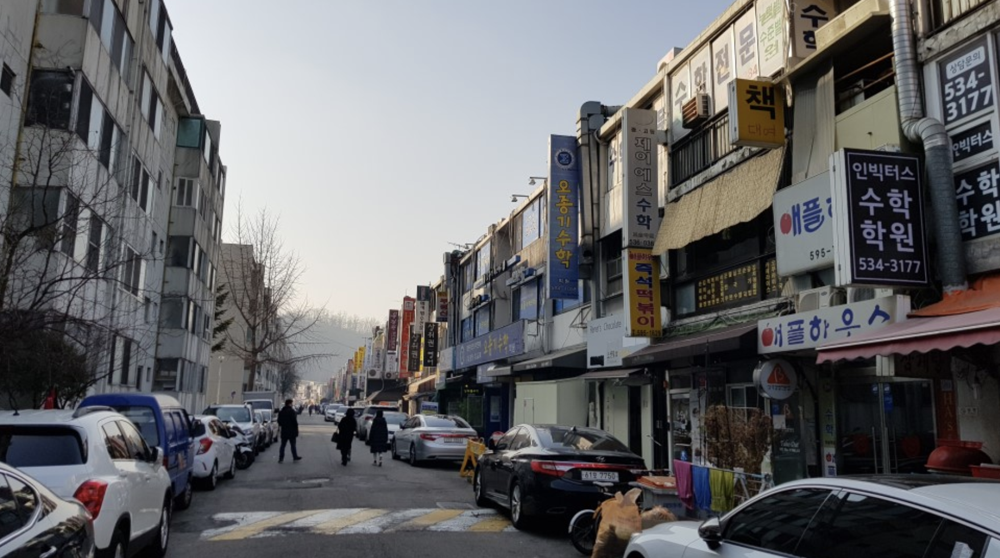
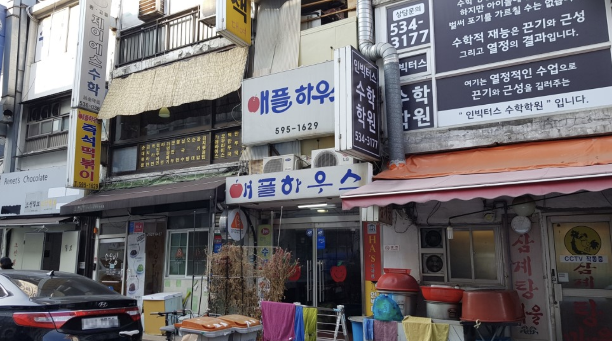
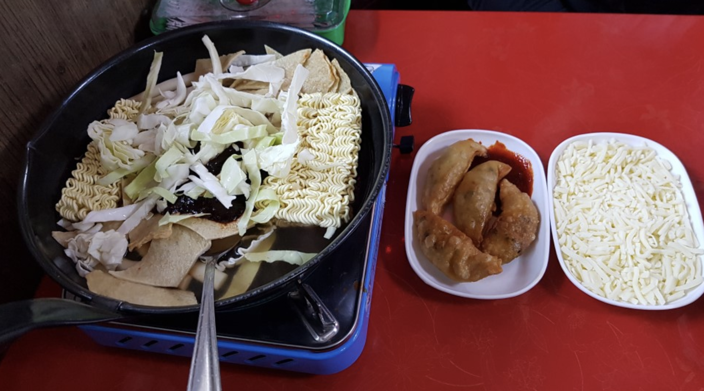
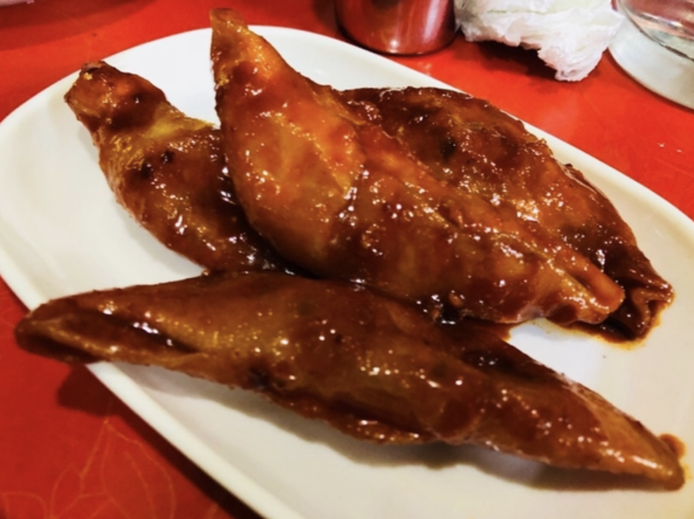
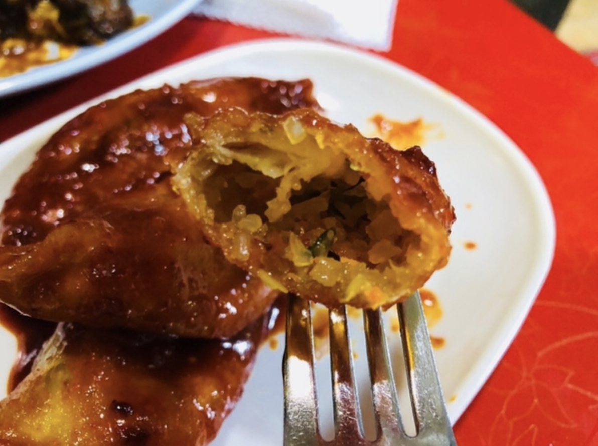

강남 반포동 애플하우스 위치 - 서울 10대 떡볶이
강남 반포동 애플하우스 위치: 서울 서초구 신반포로 50 (반포동 978)
- 방영정보
- 수요미식회 153회 : 18.01.17 즉석떡볶이/무침만두
- 식신로드1 146회 : 13.09.06 즉석떡볶이
즉떡 매니아로 직접 가본 개꿀맛탱 분식집 애플하우스 정보
애플하우스 메뉴 (분식)
| 메뉴 | 가격 |
|---|---|
| 일반떡볶이 | 4,000 |
| 즉석떡볶이 | 3,500 |
| 라면+쫄면사리 | 3,500 |
| 라면사리 | 2,500 |
| 쫄면사리 | 2,500 |
| 오뎅사리 | 2,500 |
| 치즈사리 | 2,500 |
| 삶은계란 | 500 (1개) |
| 무침군만두 | 2,500 (4개) |
| 공기밥 | 1,500 |
| 오뎅 | 1,500 |
| 순대볶음 | 3,500 |
| 라면 | 3,000 |
| 순대 | 3,000 |
| 쫄면 | 4,000 |
| 잔치국수 | 3,500 |
| 비빔국수 | 4,000 |
| 김치볶음밥 | 4,500 |
| 물냉면 | 4,000 |
신당동식 즉석 떡볶이로 이름 날린 분식집 애플하우스. 가격 저렴하고 즉떡에는 말랑말랑한 떡과 오뎅, 양배추 등등이 들어가고 양념은 약간 달달. 애플하우스의 별비 무침군만두는 흡사 치킨 먹는 느낌을 받을 수 있다.
개인적으로 좋아하는 반장떡볶이랑 견주어도 손색 없음ㅎㅎ
 대로변 상가 뒷쪽에 입구가 있어서 주소찍고 찾아가도 헷갈릴 수 있다.
 입구 모습
 애플하우스 즉석떡볶이 모습. 신당동 떡볶이의 전형적인 모습 그대로 ㅎ
 애플하우스의 별미 무침군만두 +_+
 JMT
손님이 워낙 많아서 점심 저녁시간에 가면 사람들 엄청 북적이고 사장님들 렉걸려서 좀 불편하다.
그치만 맛으로 다 커버됨ㅎㅎ 우주의 중심에 즉떡이 있다.
같은 카테고리의 다른 글
Home| 강남 즉석떡볶이 맛집 모음 (반장즉석떡볶이, 대장곰, 애플하우스) | 2019. 02. 20 |
|---|---|
| 강남 신사동 가로수길 팬아시아 가격 메뉴판 / 가로수길 맛집 | 2019. 02. 19 |
| 강남 런드리피자 메뉴 가격 / Laundry Pizza | 2019. 02. 19 |
| 강남 반포동 애플하우스 위치 - 서울 10대 떡볶이 | 2019. 02. 18 |